OVERWORKING: el juego cooperativo de programadores al borde del burnout
Un co-op frenético para 1 o 2 jugadores en el que coges requisitos, programas, compilas, testeas, juntas módulos en un Pull Request y despliegas a producción antes de que caduque el ticket. Todo mientras arden los servidores, se escapan bugs y el manager pregunta si tienes «5 minutitos».
- Gratis
- 1–2 jugadores (co-op local)
- Teclado, ratón o mando
- Sin instalar: se juega en el navegador
- 5 niveles · 4 dificultades
- En español
¿De qué va?
Si te gustan los juegos cooperativos de cocina caótica tipo Overcooked, OVERWORKING cambia los fogones por una oficina de desarrollo de software. Los «platos» son features que piden los clientes: una Landing Page, una API REST, un Login, un Dashboard o una App Full-Stack completa. Cada pedido necesita módulos de uno o varios carriles (front, back y datos) y hay que entregarlo antes de que se acabe su tiempo.
Todo el arte y la música chiptune se generan por código con HTML5 Canvas y WebAudio. No hay descargas, registros ni anuncios: abres la página y juegas.
Cómo se juega
Cada pedido es una feature. Cada módulo de color recorre esta cadena de montaje:
-
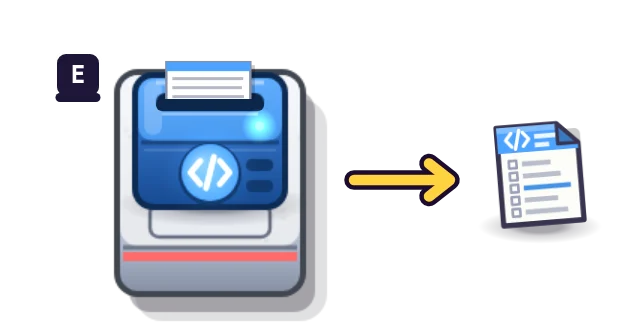
Coge la spec en la impresora de su color con E.
-
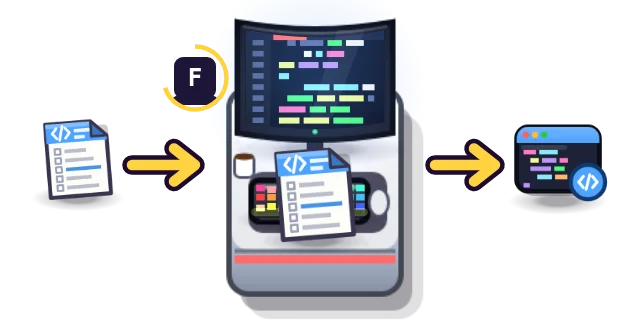
Prográmala en un escritorio: déjala y mantén F → código.
-
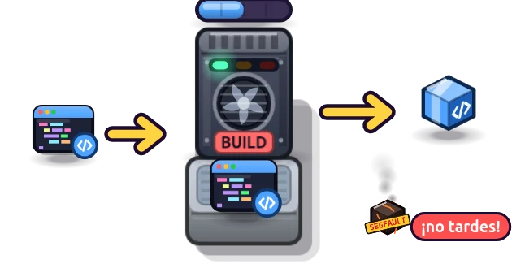
Compílala en el servidor de build. Va sola… pero recógela a tiempo o se quema.
-
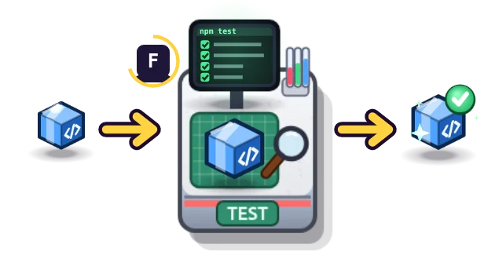
Pasa el QA en el banco de tests: mantén F → módulo testeado ✔.
-
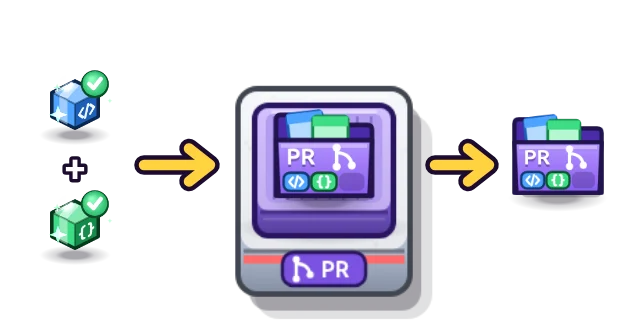
Mételo en un PR: deja los módulos testeados dentro de la carpeta morada.
-
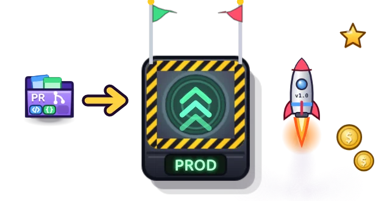
Lleva el PR a DEPLOY: ¡cohete, monedas y pedido entregado!
¿Qué meto en el PR?
Mira la tarjeta del pedido: cada chip de color es un módulo testeado que tiene que ir dentro de la carpeta. Ni más ni menos, y como mucho uno de cada color.
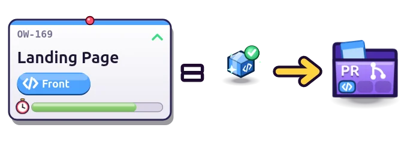
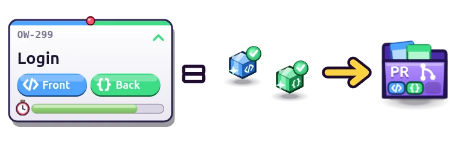
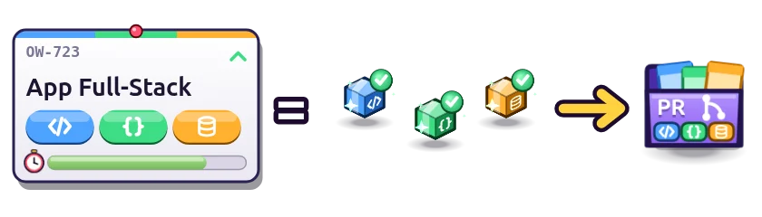
Otros pedidos
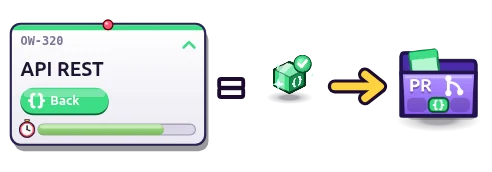
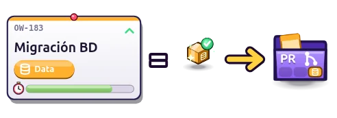
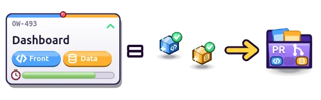
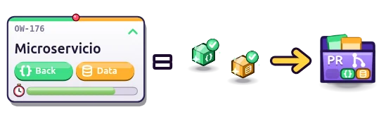
- Fuego: si un build se queda en el servidor sale SEGFAULT y arde. Apágalo con el extintor HOTFIX (mantén Acción). Lo quemado, a la papelera.
- Bugs: a veces escapa uno del banco de tests y bloquea una estación: acércate con las manos vacías y aplástalo.
- Code review: los PR vuelven «con comentarios»; límpialos en la estación del pato de goma para reutilizarlos.
- Café: la energía baja con el tiempo. Sin café vas a cámara lenta; recárgala en la cafetera.
Cada pedido caducado resta dinero. Consigue de 1 a 3 estrellas por nivel para desbloquear el siguiente; el progreso se guarda en tu navegador.
Controles
Con 1 jugador manejas a dos devs y alternas entre ellos con Tab (o Y en el mando). Con 2 jugadores compartís teclado o usáis mandos.
| Acción | Jugador 1 | Jugador 2 | Mando |
|---|---|---|---|
| Mover | W A S D | Flechas | Stick / cruceta |
| Coger / dejar | E | . | A |
| Acción (mantener) | F | , | X |
| Dash | Shift izq. | - / / | B |
| Cambiar de dev (1 jugador) | Tab | Tab | Y |
| Pausa | Esc / P | Esc / P | Start |
| Silenciar | M | M | — |
Los menús se manejan con flechas o WASD y Enter, con el ratón o con el mando.
Niveles
Los niveles se eligen en un selector con forma de grafo de ramas de git.
El Garaje
Tu primer sprint: tutorial guiado con front y back, sin sustos.
Startup Open Space
Tres carriles y los primeros bugs sueltos.
La Consultora
Cuidado con el manager y sus «5 minutitos» (el dash lo esquiva).
El Datacenter
Cintas transportadoras, luz tenue y servidores que se recalientan antes.
Viernes 17:59 · Deploy Day
Todo a la vez. Y se va la luz.
Dificultades
- Becario Feliz
- Pedidos sin prisa, sin necesidad de café y el manager de vacaciones mentales.
- Junior Optimista
- «Esto lo saco en una tarde». Mucho margen para aprender.
- Senior Cafeinado
- Deadlines de verdad y dos cafés por hora, pero con oficio.
- Rockstar 10x
- Deploy en viernes, sin tests y con el servidor ardiendo. Suerte.
Preguntas frecuentes
¿Es gratis?
Sí. OVERWORKING es gratuito y de código abierto (licencia GPL-3.0).
¿Hay que instalar algo?
No. Funciona en cualquier navegador moderno (Chrome, Firefox, Edge, Safari) en ordenador.
¿Se puede jugar online?
El multijugador es local: dos personas en el mismo ordenador, compartiendo teclado o con mandos.
¿Puedo jugar solo?
Sí: en modo 1 jugador controlas a dos devs y cambias entre ellos, y los umbrales de estrellas son más bajos.